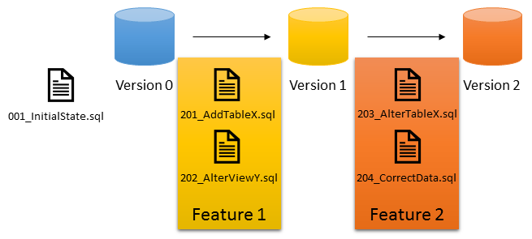
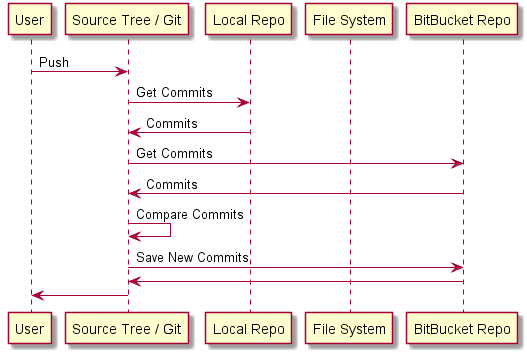
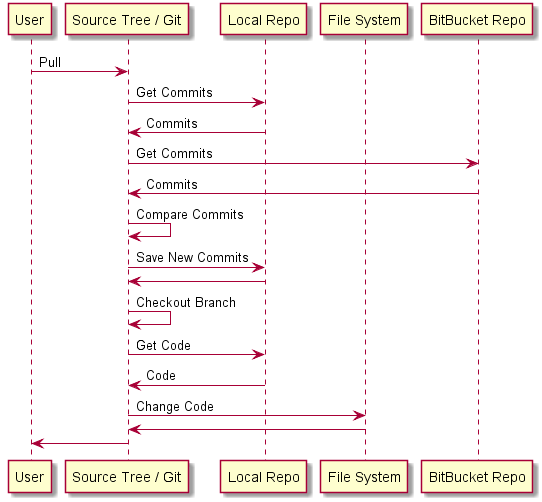

Git
for Database Build Process
Assumptions
- New to Git
- Your Repository is Already in BitBucket
- Database Repository Bias
Tools
BitBucket Server
Web application integrated with Git
Source Tree
GUI for Git
Team City
Continuous Integration Server
Get the Source Code
Clone the Repository
Repository == Source Control for a Single Project
"repo" for short


Local Build
Optional at First
Assumptions
- SQL Express Installed Locally
- You Have Admin to SQL Express

Branching
First Class Feature
Branching Strategy
GitFlow
master
Code that matches production.
develop
Code in development not in production.
Branches on BitBucket
origin/[branch names]

Making a Change
in a branch
By Default
Branch => Local Repo Only
By Default
Commit => Local Repo Only
Feature Branch
Smallest unit of "deployable" functionality.
Feature Branch Name
feature/[change name]
Add Database Change Scripts
Database State Transitions
Up
folder contains the Transition Scripts
Synchronizing the Repo
Change is only local
Push
Pull (Get Latest)
Did it Work?
Team City
Pull Request
A request for review by peers / DBA Team.
Once a pull request is sent, interested parties can review the set of changes, discuss potential modifications, and even push follow-up commits if necessary. -- github
Goal to Merge
feature branch => develop branch
Did Not Cover
- Roundhouse in Detail
- Merging to Master
- Changing Non-Tables
- Automated Deployment
- Merge Conflicts